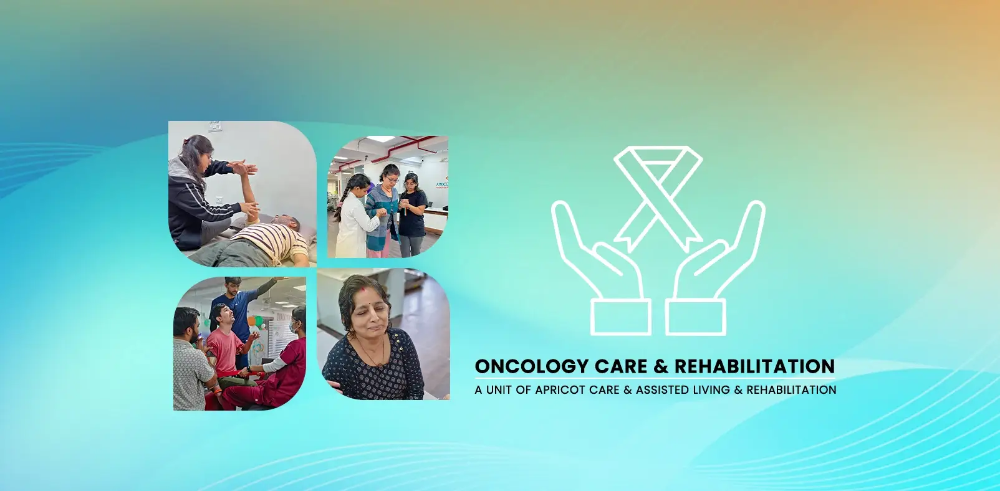

Specialized Oncology Rehabilitation in Pune


Specialized Oncology Rehabilitation in Pune
A cancer diagnosis begins an all-encompassing journey focused on one primary goal: fighting the disease. While your medical team focuses on the vital treatments of surgery, chemotherapy, and radiation, another crucial aspect of your well-being must be addressed—your strength, your function, and your quality of life. The very treatments that save your life can take a profound toll on your body and spirit.
Cancer-Related Fatigue (CRF), a persistent exhaustion not relieved by rest, is the most common side effect of treatment, affecting up to 90% of patients undergoing chemotherapy or radiation.
At Apricot Care Assisted Living and Rehabilitation in Pune, we are an essential and compassionate partner on your cancer care team. Our specialized Oncology Rehabilitation program is not about treating the cancer itself; it is about treating you. We are dedicated to helping you manage the debilitating side effects of treatment, maintain your physical and emotional strength, and empower you to live with dignity, hope, and purpose through every stage of your journey.
Our Oncology Rehabilitation Program Is Designed To:
- Help you maintain strength and endurance to better tolerate cancer treatments.
- Significantly reduce debilitating side effects like cancer-related fatigue and pain.
- Preserve your mobility, function, and independence in daily life.
- Address specific post-surgical issues like lymphedema or limited motion.
- Improve your overall quality of life, both during and after treatment.

Support at Every Stage of Your Cancer Journey
Oncology rehabilitation is a vital resource that provides immense benefits at any point, from diagnosis to survivorship.
- Prehabilitation (Before Treatment Begins)
The period between diagnosis and the start of treatment is a critical window. By engaging in a targeted program before surgery or chemotherapy, you can build up your physical reserves. This has been shown to reduce complications and lead to a faster, more complete recovery after treatment. - During Active Treatment
Throughout chemotherapy or radiation, our focus is on helping you feel and function as well as possible. We work with you to manage side effects like fatigue and pain in real-time, helping you stay active and engaged in your life. - Post-Treatment & Survivorship
After your primary cancer treatment is complete, the journey to reclaim your life begins. We help you address any lingering side effects, rebuild your body safely, and restore the strength and confidence you need to transition into a healthy and active survivorship.
Overcoming the Side Effects of Cancer Treatment
Cancer treatment, while life-saving, often brings challenging side effects that impact daily life. At Apricot Care Assisted Living and Rehabilitation in Pune, our specialist Physiotherapists are trained to help you manage and overcome these effects with evidence-based, personalized care. From fatigue to pain and mobility issues, we provide targeted therapies to restore your strength, comfort, and independence.
The most common side effect—persistent exhaustion not relieved by rest. The#1 recommended treatment is carefully prescribed exercise. We design gentle programs to rebuild energy and break the fatigue cycle.
We use a gentle, multi-faceted approach, including manual therapy and non-invasive modalities, to manage pain from surgery, neuropathy, or the cancer itself.
Safe, progressive strengthening programs counteract muscle loss (atrophy) from treatment and bed rest, helping you regain functional strength for daily tasks.
For numbness, tingling, or pain in hands/feet, we focus on improving balance, reducing fall risk, and maintaining safety in daily activities.
For patients with lymph node removal (e.g., breast cancer), we provide Complete Decongestive Therapy (CDT)—the gold standard—to manage and reduce limb swelling.
Surgery/radiation can cause scar tissue and tightness (fibrosis). We use manual therapy and stretching to restore flexibility and mobility.

Our Integrated Oncology Rehabilitation Services
Your care plan is a unique blend of services designed to support your whole person—body, mind, and spirit.
Specialized Oncology Physiotherapy
Our Physiotherapists create safe, individualized exercise programs to improve your strength, endurance, and mobility, while carefully monitoring your energy levels and response to medical treatment.
This therapy helps you:
- Safely combat cancer-related fatigue and boost your energy levels.
- Rebuild muscle strength and improve your physical endurance.
- Maintain and improve your mobility and balance to prevent falls.
- Manage and reduce cancer-related pain.
Occupational Therapy for Daily Living
Our occupational Physiotherapists are experts in energy conservation and activity modification. They provide practical strategies to help you manage daily life while undergoing treatment.
This therapy helps you:
- Learn techniques to conserve energy while performing daily tasks like dressing and bathing.
- Use adaptive tools to make your daily routine easier and safer.
- Maintain your independence and continue to engage in meaningful activities.
- Address cognitive changes like "chemo brain" with practical strategies. (Learn more on our Occupational Therapy Page).
Psychological & Emotional Support
Our compassionate counselors provide a vital safe space for you and your family to navigate the profound emotional toll of a cancer diagnosis—the anxiety, depression, and fear for the future.
This therapy helps you:
- Develop coping strategies for the stress and emotional challenges of treatment.
- Address concerns about body image and changes in identity.
- Provide a supportive outlet for both patients and their family caregivers.
- Foster a sense of hope and mental resilience.
Nutrition Therapy
Good nutrition is critical during cancer treatment to maintain strength, support your immune system, and tolerate therapy. Our dietitians provide expert guidance.
This therapy helps you:
- Manage treatment side effects like nausea, loss of appetite, or changes in taste.
- Maintain a healthy weight and prevent muscle loss.
- Ensure your body is getting the optimal fuel it needs to heal and fight.
- Receive a personalized nutrition plan tailored to your specific needs.

our service
Our Comprehensive Care and Support Services
.webp)
.webp)
-(1).webp)
24/7 Nursing and Medical Supervision
At Apricot Care Assisted Living and Rehabilitation, we provide 24/7 nursing support to ensure that you receive continuous care and medical monitoring. Whether you're staying in our facility or recovering at home, our trained nurses and medical staff are always available to address your needs, ensuring a safe and secure environment throughout your recovery journey.
.webp)
.webp)
.webp)
.webp)
.webp)
.webp)
.webp)
.webp)
.webp)
.webp)
.webp)
.webp)
Why Choose Apricot Care Assisted Living and Rehabilitation for Oncology Care in Pune?
A Private, Nurturing & Non-centeral Environment
We have created a space that is calm, private, and filled with optimism. It is a sanctuary where you can focus on your well-being, away from the stressful atmosphere of a hospital.
Specialist-Trained Physiotherapists
Our Physiotherapists have advanced training and a deep understanding of oncology. We know what you are going through and how to create a program that is both safe and highly effective for you.
Gentle, Energy-Paced Sessions
We listen to your body. We understand that you will have good days and bad days. Your energy level and how you feel on any given day dictate the pace and intensity of every session.
Close Coordination with Your Oncology Team
We function as an integral part of your medical team. We maintain communication with your oncologist and surgeon to ensure your rehabilitation plan is fully aligned with your overall cancer care.
Frequently Asked Questions (FAQ)
Is it really safe for me to exercise during chemotherapy?
Yes, not only is it safe, it is highly recommended by major cancer organizations worldwide as a way to reduce fatigue and other side effects. The crucial element is that the exercise must be prescribed and monitored by a professional who understands oncology. They will design a program that is appropriate for your diagnosis, treatment type, blood counts, and daily energy levels.
I have zero energy. How can I possibly do therapy?
This is the most common and understandable concern. The program is specifically designed to break the debilitating cycle of fatigue. We start very gently, and the goal is to leave you feeling better and more energized, not depleted. Even 5-10 minutes of light, structured activity can begin to rebuild your energy reserves. We always work within your limits
My doctor never mentioned rehabilitation. Is it really necessary?
Oncology rehabilitation is a relatively new but rapidly growing and essential field of medicine. While many oncologists now actively refer patients, some may still be focused solely on the medical treatment of the disease. Rehabilitation is the key to managing the side effects of that treatment, improving your function, and preserving your quality of life. You have the right to seek it out to support your journey.
When is the best time to start oncology rehab?
The simple answer is: as soon as possible after your diagnosis. Starting "prehabilitation" before your treatment even begins can significantly improve your outcomes. However, it is never too late to start. Whether you are in the middle of treatment or have finished years ago, rehabilitation can help you regain strength and function.
Your Road To Recovery
Book An Appointment To Kickstart Your Recovery Journey
Seamless On-site Rehabilitation
Visit our neuro and physiotherapy center in Pune to meet our professionals and start your treatment .
Personalized Online And Home Care Services
Begin with a personalized consultation for online therapies and home healthcare services. Our professionals will help you heal without leaving your house